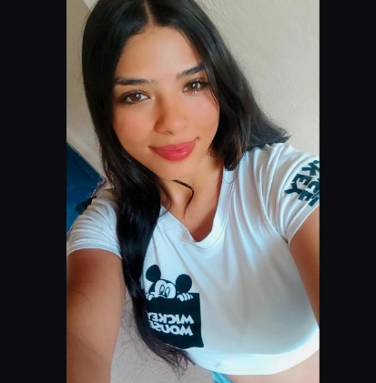
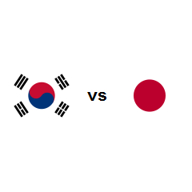
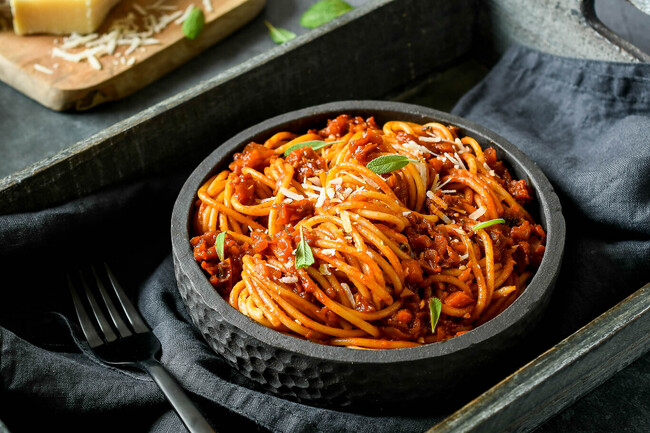

Esta es una página web para Leidy. ¿Qué vamos a hacer en esta página? Muy fácil, vamos a aprender sobre Leidy y ella de nosotros, siempre y cuando ella esté interesada.
Además, en esta página vamos a ir actualizando lo que vivimos o hablamos con ella para que no se nos olvide y así yo, Juan David, ir practicando mi lógica de programación para estar listo para las prácticas universitarias a finales del próximo año.
"Perdón si hay texto que está mal escrito, es que soy pésimo para la ortografía."¿Quién es Leidy?

Leidy es esta hermosura 😍
¿Qué sé de Leidy hasta ahora?
- A Leidy le gusta mucho el orden.
- Al parecer le gusta mucho leer, aunque ella no lo crea así.
- No le gustan los animales, al menos no para tenerlos como mascotas.
- Es madrina de su hermana menor y según ella, es una niña muy linda (Espero algún día conocerla).
- Estudia gestión de insumos agropecuarios (que no sé qué es).
- Quiere ir a vivir a Korea, no sé por qué si Japón es mejor (es broma).
- Tiene una forma de hablar bastante "cuidadosa por así decirlo", aunque según ella suele hablar de una forma más grotesca.
- Le gustan mucho los espaguetis.
- Le gustan los paisajes.


¿Qué me gustaría aprender sobre Leidy?
- Sus hobbies favoritos
- Sus metas a corto y largo plazo
- Su música favorita
- Sus lugares favoritos para visitar
- Su color favorito